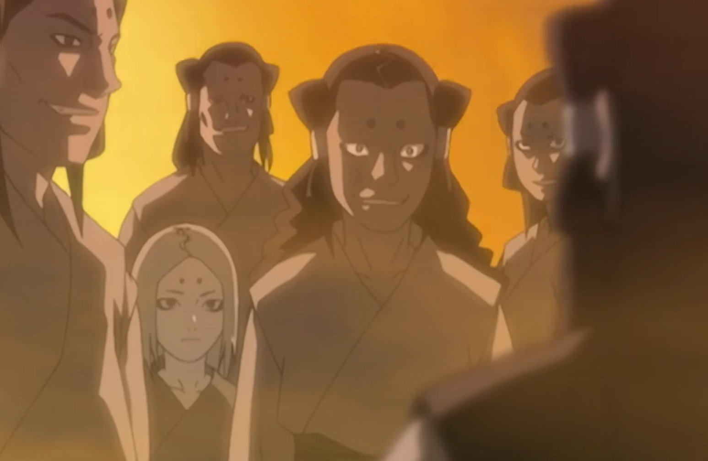

A GREVE GERAL

No Kigen, os civis têm o poder de paralisar a economia e a infraestrutura de um país inteiro.
Se um Daimyō ou um Clã Ninja abusar do poder, cobrar impostos abusivos ou agir com tirania, os civis podem organizar uma resistência civil coordenada.
O CHAMADO
Tudo começa no canal #Boca-a-Boca. Um civil (geralmente um Ídolo ou um Jornalista) deve iniciar o movimento espalhando o descontentamento.
Mecânica: É necessário atingir uma "Massa Crítica" de apoio. Se outros civis (ou até ninjas simpatizantes) começarem a replicar o boato e apoiar a causa, a greve é oficialmente declarada.
O MOTIM
Se a greve não for resolvida com diplomacia ou redução de impostos, ela evolui para um Motim. Civis começam a sabotar construções, incendiar armazéns e bloquear estradas.
O Dilema Ninja: Os clãs ninjas podem tentar reprimir o motim à força, mas cada civil morto gera uma Infâmia gigante para o clã no sistema de Legado, podendo fazer o clã inteiro ser odiado e caçado por outras nações.
TIPOS DE PARALISIA
- Greve dos Engenheiros e Ferreiros Construções de bases param na hora. Não há reparo de armaduras nem criação de novas katanas ou tecnologias. O país fica tecnologicamente estagnado.
- Greve dos Médicos Hospitais e clínicas param de atender. Ninjas feridos em batalha não podem ser curados por NPCs e o custo de remédios sobe 500% no mercado negro.
- Greve dos Jornalistas Ninguém sabe o que acontece nas fronteiras. O canal de notícias para de funcionar, facilitando invasões de países inimigos que não serão reportadas.
- Boicote da Máfia O fluxo de itens ilegais e contrabando é cortado, deixando os ninjas sem acesso a venenos e equipamentos raros.
NEGOCIAÇÃO E DESFECHO
Para a greve acabar, os líderes das organizações envolvidas ou os Daimyōs precisam sentar à mesa com os representantes civis (Doutores das Leis ou Ídolos) e assinar um tratado em ON.
Exemplo: Redução no preço dos pedágios das Zonas de RP ou o banimento de um ninja cruel daquela região.
Aqui está a versão direto ao ponto para o Civil Comum: No Kigen, sua voz é sua arma. Use-a com sabedoria!